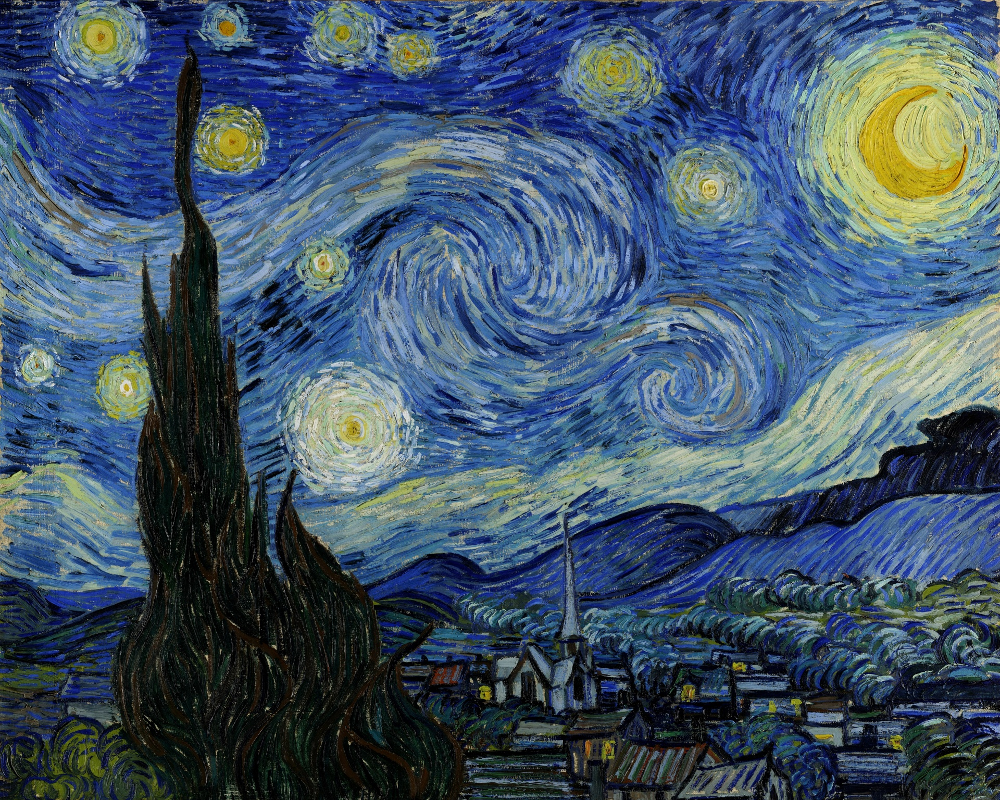

In this practice, I will present you how to use images on your webpages. To insert images in a webpage, we need to use an img element provided by HTML.
To use an img element, we need to provide a src attribute with a value that indicate where the image is located. Also, we can use an alt attribute to inform an alternative text if the browser can't display the image. If we want to show a text describing its image details when a visitor hover his mouse on the image, we can use a title attribute to contain a text with additional information about the image. Last but not least, we can use width and height attributes to establish sizes for each image, this attributes helps the browser to determine spaces it needs to reserve to display images while rendering a page.
